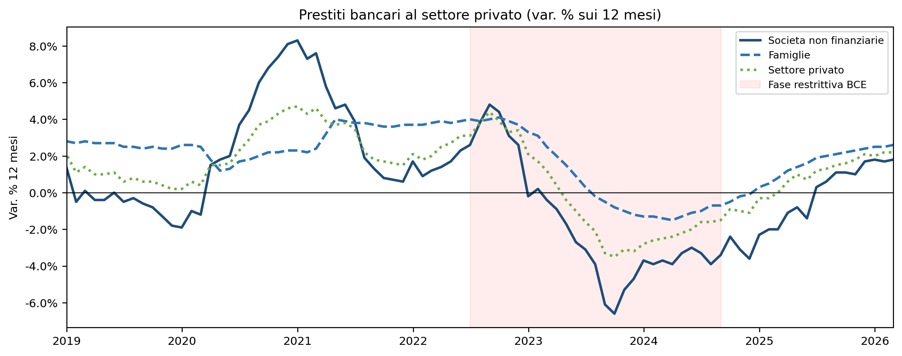
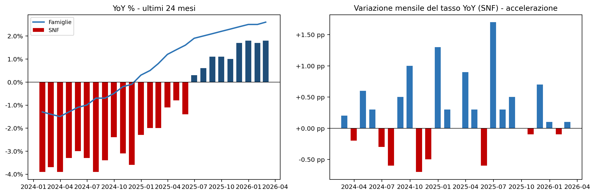
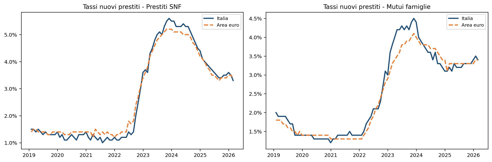
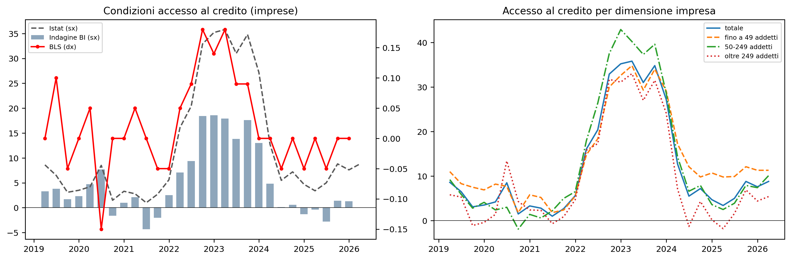
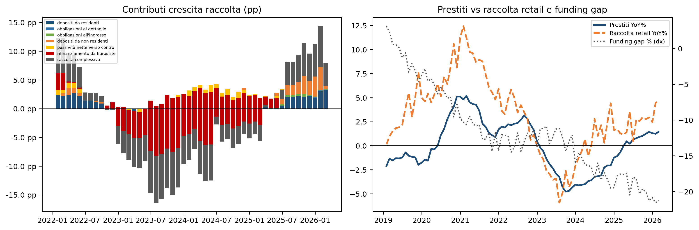
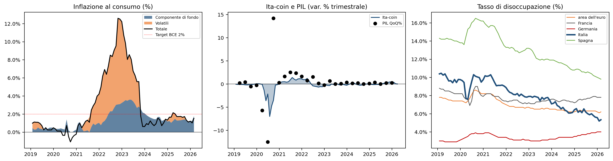

EIB aprile 2026 — Credito bancario: la ripartenza dopo la stretta
Analisi dei dati Economia italiana in breve, Banca d’Italia
Paolo Volterra ![]()
Analisi dei dati dell’edizione aprile 2026 di Economia italiana in breve (Banca d’Italia). Focus sulla ripresa del credito bancario al settore privato dopo la fase di stretta monetaria 2022-2024: dinamica dei prestiti (fig. 22), tassi di interesse (fig. 23), accesso al credito (fig. 24), raccolta e fine dei TLTRO (fig. 25-26), contesto macro - inflazione, Ita-coin, occupazione (fig. 10, 1, 8b).
credito, banche, prestiti, EIB, Banca d’Italia, politica monetaria, BCE
Analisi dei dati Economia italiana in breve (aprile 2026) con focus sulla ripresa del credito bancario al settore privato dopo la stretta monetaria 2022-2024. Sezioni: prestiti (fig. 22), tassi (fig. 23), accesso al credito (fig. 24), raccolta e fine TLTRO (fig. 25-26), contesto macro - inflazione, Ita-coin, occupazione.
1 Setup e download dati
URL: https://www.bancaditalia.it/pubblicazioni/economia-italiana-in-breve/2026/dati_eib_Aprile_2026_it.xlsx
Bytes: 2288632 Fig_22 — Prestiti bancari al settore privato (var. % sui 12 mesi)
Il turning point confermato: le SNF avevano toccato il minimo a -1.4% (maggio 2025); a febbraio 2026 sono a +1.8%. Il tasso si è stabilizzato attorno a +1.7/1.8% negli ultimi tre mesi: non accelera, ma tiene.

Ultimi 12 mesi:
SNF Famiglie Settore privato
id
2025-03-31 -1.1 1.2 0.6
2025-04-30 -0.8 1.4 1.0
2025-05-31 -1.4 1.6 0.7
2025-06-30 0.3 1.9 1.2
2025-07-31 0.6 2.0 1.3
2025-08-31 1.1 2.1 1.5
2025-09-30 1.1 2.2 1.6
2025-10-31 1.0 2.3 1.8
2025-11-30 1.7 2.4 2.1
2025-12-31 1.8 2.5 2.0
2026-01-31 1.7 2.5 2.2
2026-02-28 1.8 2.6 2.2Commento. Il turning point del ciclo creditizio italiano si conferma e si consolida. Le societa non finanziarie (SNF) avevano toccato il minimo a maggio 2025 con una contrazione del -1,4% su base annua: il punto piu basso dalla fase di rientro post-Covid. Da quel punto e partita una risalita che ha portato il tasso in territorio positivo da giugno 2025 e a +1,8% a febbraio 2026 — nove mesi dopo il minimo. Il dato di dicembre 2025 risulta revisionato a +1,8% (dalla stima preliminare di +2,0%), con una stabilizzazione nell’intervallo +1,7/+1,8% negli ultimi tre mesi: segnale di consolidamento, non ancora di accelerazione.
Le famiglie hanno seguito una traiettoria piu morbida: il tasso non e mai diventato negativo e a febbraio 2026 sale al +2,6%, confermandosi stabilmente sopra le SNF. Questo riflette la maggiore resilienza della domanda di credito al consumo rispetto a quella per investimento produttivo, che risente maggiormente dell’incertezza sul costo del capitale.
La banda rossa evidenzia la fase di rialzo dei tassi BCE (luglio 2022 - settembre 2024): e in quella finestra che il credito alle SNF si e deteriorato progressivamente. L’inversione attuale coincide con l’avvio del ciclo di allentamento, con il consueto ritardo di trasmissione di sei-nove mesi documentato dalla letteratura empirica sull’area euro.

Velocita storica SNF 2019-2024: media=-0.025 pp, std=0.921 pp
2025-07: delta=+0.30 pp z=+0.35
2025-08: delta=+0.50 pp z=+0.57
2025-09: delta=+0.00 pp z=+0.03
2025-10: delta=-0.10 pp z=-0.08
2025-11: delta=+0.70 pp z=+0.79
2025-12: delta=+0.10 pp z=+0.14
2026-01: delta=-0.10 pp z=-0.08
2026-02: delta=+0.10 pp z=+0.14Commento. L’analisi della velocita (prime differenze del tasso YoY) scompone la ripresa in impulsi mensili e permette di rispondere a una domanda precisa: la crescita del credito sta accelerando o si sta semplicemente normalizzando a un ritmo costante?
Il pannello di destra mostra che la velocita e positiva ma discontinua: ci sono mesi con impulsi significativi (+0,5/+0,6 pp) alternati a mesi piu piatti. Lo z-score confronta ogni impulso con la distribuzione storica 2019-2024: valori vicini a zero indicano che il ritmo attuale rientra nella variabilita ordinaria, non in una accelerazione straordinaria.
La lettura corretta e quindi prudente: il credito e tornato a crescere, ma non sta “sparando”. Siamo in una fase di rientro nella normalita dopo la stretta, non in una fase espansiva trainata da domanda eccezionale di investimento. Questa distinzione e rilevante per la politica economica: un segnale di accelerazione strutturale richiederebbe piu elementi - domanda di investimento in rialzo, accesso al credito in miglioramento netto, aspettative di crescita elevate - che per ora sono solo parzialmente presenti.
3 Fig_23 — Tassi di interesse sui nuovi prestiti (Italia vs Area Euro)
Tassi in ulteriore discesa. Febbraio 2026: SNF Italia a 3.3% — per la prima volta sotto la media EA (3.4%).

Ultimi 6 mesi:
IT_SNF EA_SNF IT_mutui EA_mutui
id
2025-09-30 3.4 3.4 3.3 3.3
2025-10-31 3.5 3.4 3.3 3.3
2025-11-30 3.5 3.4 3.3 3.3
2025-12-31 3.6 3.5 3.4 3.3
2026-01-31 3.5 3.5 3.5 3.4
2026-02-28 3.3 3.4 3.4 3.4Commento. I tassi sui nuovi prestiti raccontano il “prezzo” della ripresa del credito e segnalano una novita rilevante. Dopo aver toccato i picchi nel 2023 (SNF oltre il 5% in Italia), il costo del credito ha continuato a scendere: a febbraio 2026 i tassi sui nuovi prestiti alle SNF in Italia sono a 3,3%, sotto la media dell’Area Euro (3,4%). E la prima volta dal 2022 che il tasso italiano per le imprese si colloca al di sotto di quello medio europeo — un segnale che il premio al rischio-paese si e non solo chiuso ma invertito, probabilmente per effetto congiunto dello spread BTP-Bund stabile e della maggiore concorrenza tra istituti sulla raccolta di nuovi impieghi. Per riferimento: nel 2019 i tassi sulle SNF erano stabilmente sotto il 2%.
Per i mutui alle famiglie il percorso e analogo: a febbraio 2026 Italia e Area Euro sono entrambe al 3,4%, in ulteriore calo rispetto ai 3,6% del picco 2023. Il recupero della domanda di mutui rimane graduale: il costo assoluto e ancora doppio rispetto al periodo pre-2022 e l’accessibilita abitativa per le famiglie a reddito medio resta compromessa. Ulteriori tagli BCE attesi nel 2026 potrebbero sbloccare segmenti di domanda latente, in particolare per i contratti a tasso variabile.
4 Fig_24 — Accesso al credito per le imprese
BLS neutro a fine 2025: le banche non stanno restringendo ulteriormente. Verifica differenziale per dimensione d’impresa (fig_24b).

Commento. Le indagini sull’accesso al credito confermano che la fase di irrigidimento delle condizioni e terminata. Il Bank Lending Survey (BLS) si e stabilizzato a zero nell’ultimo trimestre 2025: le banche dichiarano di non aver ne allentato ne ristretto ulteriormente i criteri di concessione. Un segnale neutro, ma dopo tre anni di progressivo irrigidimento, la neutralita e gia una buona notizia.
Le indagini dirette presso le imprese (Banca d’Italia e Istat) mostrano una percezione leggermente piu favorevole a fine 2025, con un rimbalzo rispetto ai minimi di meta anno. Il dettaglio per dimensione aziendale (fig_24b) e il piu rilevante per l’analisi del credito alle PMI: se il miglioramento delle condizioni riguarda prevalentemente le grandi imprese - che hanno accesso anche ai mercati obbligazionari - il rimbalzo del credito bancario potrebbe sottostimare le difficolta persistenti delle realta piu piccole.
Da monitorare: eventuali divergenze tra la fascia “fino a 49 addetti” e le imprese medie e grandi nelle prossime edizioni del BLS segnalerebbero una ripresa del credito selettiva, con ricadute distributive sulle catene produttive locali.
5 Fig_25+26 — Raccolta e funding gap: la fine dei TLTRO
Dicembre 2025: rifinanziamento BCE sceso a -0.05 miliardi - TLTRO praticamente azzerati. Funding gap stabile attorno a -21% dei prestiti.

Rifinanziamento Eurosistema - ultimi 12 mesi:
rifinanziamento da Eurosistema
id
2025-03-31 -1.782766
2025-04-30 -1.701408
2025-05-31 -1.755423
2025-06-30 -1.273284
2025-07-31 -1.252939
2025-08-31 -1.216191
2025-09-30 -0.610421
2025-10-31 -0.519692
2025-11-30 -0.540932
2025-12-31 -0.054205
2026-01-31 -0.282805
2026-02-28 -0.252420Commento. Il grafico sulla raccolta bancaria registra la conclusione di un capitolo epocale: i TLTRO III della BCE, che avevano fornito liquidita a tassi agevolati durante la pandemia, sono stati integralmente rimborsati. A dicembre 2025 il rifinanziamento dell’Eurosistema nel conto raccolta delle banche italiane e sceso a -0,05 miliardi: praticamente zero.
Questo passaggio non e neutro: significa che le banche si finanziano interamente sul mercato, a tassi di mercato. Il costo della raccolta e salito rispetto al periodo TLTRO, ma la crescita dei depositi da residenti e la raccolta estera stanno compensando il venir meno della liquidita BCE.
Il funding gap si attesta attorno al -21%: le banche devono coprire circa un quinto dei prestiti con fonti diverse dalla raccolta retail. La crescita dei prestiti (+1,3% YoY a dicembre) e leggermente inferiore a quella della raccolta retail (+2,5%), il che suggerisce che per ora il sistema non e sotto pressione di funding. La tendenza andra sorvegliata se il credito dovesse accelerare significativamente nel 2026.
6 5 · Contesto macro: inflazione, Ita-coin, occupazione
- Inflazione (fig_10): 1.52% dicembre (revisione da 1.22%) - ancora sotto target BCE ma meno distante
- Ita-coin (fig_1): 0.00 gennaio 2026 - segnale di stagnazione, da +0.37 del mese precedente
- Disoccupazione (fig_8b): Italia 5.33% dicembre (revisione da 5.59%) - minimo storico confermato

Inflazione dic-2025: 1.52%
Ita-coin gen-2026: 0.00
Disoccupazione IT dic-2025: 5.33%Commento. Il trittico macro offre un quadro misto, con qualche elemento di cautela rispetto alla lettura precedente.
Inflazione. Il dato di dicembre 2025 e stato revisionato al rialzo a 1,52% (dalla stima preliminare di 1,22%). La componente di fondo rimane attorno all’1,3-1,5%, riflettendo la dinamica persistente dei servizi. Il gap rispetto al target BCE del 2% si e dunque ridotto: l’inflazione non e piu “molto sotto target” ma semplicemente “sotto target”. Questo non cambia la direzione attesa della politica monetaria — i tagli dei tassi proseguiranno — ma potrebbe rallentarne il ritmo, con effetti sul costo del credito.
Ita-coin. Il dato di gennaio 2026 e azzerato (0,00), in netto calo dal +0,37 di dicembre. E un segnale di stagnazione dell’attivita economica che contraddice la traiettoria positiva del mese precedente. Un singolo mese non fa tendenza, ma il segnale merita attenzione: se confermato nelle prossime edizioni, suggerirebbe che la ripresa del credito non e ancora trainata da una corrispondente accelerazione della domanda aggregata reale.
Disoccupazione. Il dato di dicembre 2025 e stato revisionato ulteriormente al ribasso a 5,33%, un nuovo minimo storico. La revisione rafforza la solidita strutturale del mercato del lavoro italiano, anche se le considerazioni sulla qualita dell’occupazione (concentrata nei servizi a bassa produttivita) restano valide. Il dato e positivo per la domanda di credito al consumo, ma un mercato del lavoro vicino alla piena occupazione con Ita-coin a zero segnala che la produttivita, non l’occupazione, e il collo di bottiglia della crescita.
7 Lettura complessiva
| Indicatore | Valore | Segnale |
|---|---|---|
| Prestiti SNF (fig_22) | +1.8% feb-26 | inversione confermata, plateau attorno a +1.7/1.8% |
| Famiglie (fig_22) | +2.6% feb-26 | crescita graduale, stabmente sopra SNF |
| Tassi SNF IT (fig_23) | 3.3% feb-26 | sotto media EA (3.4%) per la prima volta dal 2022 |
| BLS (fig_24a) | 0.00 dic | neutro - nessun inasprimento |
| Rifinanziamento BCE (fig_25) | -0.05 mld dic | TLTRO azzerati a dicembre |
| Inflazione (fig_10) | 1.52% dic (rev.) | sotto target BCE, gap ridotto rispetto a stima iniziale |
| Ita-coin (fig_1) | 0.00 gen-26 | stagnazione — da monitorare |
| Disoccupazione IT (fig_8b) | 5.33% dic (rev.) | minimo storico confermato |
La ripresa del credito alle imprese e un’inversione di segno consolidata, con il tasso SNF stabile intorno a +1,8% negli ultimi tre mesi. Il segnale piu nuovo e la discesa dei tassi italiani sulle SNF sotto la media EA, che riduce ulteriormente il costo del credito per le imprese. Il nodo aperto e l’Ita-coin a zero: se la debolezza dell’attivita reale persiste, la ripresa del credito rischia di restare un fenomeno di normalizzazione finanziaria senza un corrispondente impulso agli investimenti.
Domande aperte per i prossimi mesi:
- L’Ita-coin resta a zero o rimbalza? -> determinante per capire se la ripresa del credito si traduce in PIL
- I tassi SNF italiani resteranno sotto l’EA? -> monitorare fig_23 per capire se e strutturale o transitorio
- La disoccupazione al 5.33% si accompagna a crescita salariale reale? -> fig_9a/b (retribuzioni e produttivita)